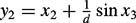
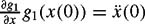
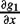

|
| |||||||||||||
|
|
||
Choose a grid of points on and sketch the tangent vectors of the vector field [x2, x21]T at those points. You may draw these with a computer if you wish. Sketch by hand or use a computer to draw a few integral curves of this vector field. Does this vector field define aregular one-dimensional distribution?
For the vector fields g1 = [x1 + x2,0]T and g2 = [0, 1 + x2]T on , sketch the integral manifolds, or foliation, defined by the distribution span({g1, g2}). (See figure 12.9 for a drawing of a foliation.) Is the distribution regular?
For the vector fields g1 = [1, 0, 0]T and g2 = [0, 1, 0]T on , sketch the foliation defined by the distribution span({g1, g2}). Is the distribution regular? Is it involutive?
For the vector fields g1 = [x3,0,0] and g2 = [0,1,0]T, sketch the foliation defined by the distribution span({g1, g2}). Is the distribution regular? Is it involutive?
For the vector fields g1 = [1+x3,1−x2,0]T and g2 = [0,0,1]T on , sketch the foliation defined by the distribution span({g1, g2}). Is the distribution regular? Is it involutive?
, sketch the foliation defined by the distribution span({g1, g2}). Is the distribution regular? Is it involutive?
For the vector fields g1 = [1+x3,1−x3,0]T and g2 = [0, 0, 1]T on , sketch the foliation defined by the distribution span({g1, g2}). Is the distribution regular? Is it involutive?
Describe physical systems with the following properties, not using the examples discussed in the chapter: accessible but not STLA; accessible but not controllable; controllable but not STLA; STLA but not STLC; STLC but not controllable.
For vector fields that are linear in the state, e.g., g1(x) = Ax and g2(x) = Bx, the Lie bracket has the particularly simple form
called the matrix commutator of A and B. For such vector fields, the Lie bracket can be calculated without differentiation. As an example, let x = [x1, x2, x3]T and
and let g1 = Ax and g2 = Bx. Use equation (12.5) to show [g1, g2](x) = (BA − AB)x, the negative of the expression in equation (12.39). (Note that the sign of the Lie bracket is immaterial in generating the distribution.)
Write Mathematica (or other symbolic software) code to take two vector fields and calculate their Lie bracket.
The configuration of a wheel of radius R has six degrees of freedom in three-dimensional space, described globally as SE(3)or locally using x-y-z and roll-pitch-yaw coordinates. Choose six coordinates to describe the wheel's configuration in space, where the x-y-z coordinates describe the position of the center of the wheel. With these six coordinates, write two holonomic constraints that constrain the wheel to stand upright on a plane at z = 0 (figure 12.34). If you choose your coordinates properly, this will leave you with four coordinates to describe the configuration of the wheel on the plane. Using the time-derivatives of these coordinates, write the two nonholonomic constraints that prevent slipping at the contact between the plane and the wheel as it moves.
This system is identical to the unicycle example in this chapter, except the configuration space is four-dimensional (the rolling angle of the wheel is included). If the two controls are the rolling angular velocity of the wheel and the turning-in-place angular velocity of the wheel, write the two control vector fields, and write the system as a control-affine nonlinear control system. Using Lie brackets of the vector fields, show that the system is STLC at any configuration if the control set belongs to .
For the wheel of problem 10, describe a four-step motion-planning algorithm to take the unicycle to an arbitrary configuration in its obstacle-free four-dimensional configuration space. The final step of the algorithm should drive the wheel around a circle to achieve the desired rolling angle. Your algorithm should take the final configuration as input (assuming the wheel starts from the origin configuration [0, 0, 0, 0]T) and return a sequence of control values u1 and u2 and the times they are applied.
Transform the control system of problem 10 to chained form. This may be challenging!
Prove that the standard car model of equation (12.34) is STLC.
Derive the drift and control vector fields for the PBWT, assuming that it has mass m and inertia I about the center of mass. Then set m = I = 1 and verify that your vector fields match those given in the text.
Because the PBWT has three degrees of freedom but only two controls, there is a constraint on its possible accelerations. Derive this constraint, and show that it can be written in the form in the absence of gravity.
Imagine a PBWT where the control u2 is a pure torque about the center of mass. Write the two control vector fields, put the system in the control-affine form (12.6), and use theorem 12.3.3 to show that it is STLC at zero velocity in the absence of gravity. Then put the system in the covariant derivative form of equation (12.13) and use theorem 12.4.1 to prove the same thing.
Flat outputs for the PBWT are and . Find the maps φ and ψ to recover the states x(t) and control inputs u(t)asa function of the trajectory of the flat outputs y(t).
Flat outputs for the car pulling trailers, described in subsection 12.5.6, are the two coordinates describing the planar location of the point midway between the two wheels of the last trailer. Find the maps φ and ψ to recover the states x(t) and control inputs u(t)asa function of the trajectory of the flat outputs.
Let u1 and u2 be the torques at the two joints of a 2R robot arm in a horizontal plane (figure 12.35). Write the dynamics of the 2R arm in the form of equation (12.6), where the masses of the first and second links are m1 and m2, and the inertias of the links about their centers of mass are I1 and I2. Because the drift vector field g0 is energy-conserving and the arm configuration space S1×S1 = T2 is compact, the drift vector field is WPPS. If possible, use theorem 12.3.5 to show that the robot arm is (globally) controllable with u2 = 0; in other words, any state is reachable from any other state by using only torques at the first joint. If you cannot, explain whether you believe the arm is controllable or not, and how you might demonstrate your belief. Why is the arm not controllable if but u1 = 0?
Let [u1, u2, u3]T be the torques at the three joints of the 3R robot arm of figure 12.32 in a horizontal plane. Write the dynamics of the 3R arm in the form of equation (12.6).
In subsection 12.5.7, a motion planner is described for the underactuated 3R arm with u3 = 0. In this case, there are two decoupling vector fields, or two rank 1 kinematic reductions. If instead only the first actuator is missing, so u1 = 0, there is a rank 2 kinematic reduction—the system is maximally reducible to a kinematic system. This means that the acceleration constraint due to u1 = 0 can actually be integrated to a velocity constraint: the total angular momentum about the first joint is conserved. Assuming that the 3R robot arm begins at rest, write this velocity constraint and give the rank 2 kinematic reduction in the form of equation (12.15).
The dynamics of an RP manipulator are derived at the beginning of chapter 10. Set gravity ag to zero, and assume that the robot is missing the actuator at the prismatic joint, so u2 = 0. Find the input vector field Y1(q) and use theorem 12.4.1 to show that the system is STLA when q2 > 0 using only the actuator at the revolute joint. Also, provide an argument either supporting or rejecting the hypothesis that the arm is globally controllable on its state space.
The snakeboard is a commercial toy whose concept is derived from the well known skate- board. It is composed of two steerable wheeled platforms joined by a coupling bar, and the rider propels herself forward without touching the ground by steering the wheels and twisting her body back and forth. A simple model of the snakeboard is shown in figure 12.36. Here a momentum rotor simulates the rider by spinning back and forth, and by conservation of angular momentum about the rotation center chosen by the wheels, the snakeboard body moves. The snakeboard model is an underactuated mechanical system with nonholonomic constraints, which we will write in the form of equations (12.18) and (12.19).
Figure 12.36: The snakeboard model.
Let the configuration of the snakeboard be represented by q = [x, y, θ, ψ, φ]T, where (x, y) represents the Cartesian position of the center of the snakeboard coupler, θ is its angle, and ψ and φ are the angle of the rotor and the steering angle of the wheels, respectively, expressed in the body frame. The inertia matrix for the snakeboard is given by
where m is the total mass of the snakeboard, I is the inertia of the coupler about its center of mass, Ir is the rotor inertia, and  is the inertia of each set of wheels about its pivot point. (Note that because the inertia matrix is invariant to the configuration, the Christoffel symbols are zero.) The system is subject to two control inputs: a torque uψ that controls the rotor angle ψ, and a torque uφ controlling the steering angle φ. Therefore u = [uψ, uφ]T and T(q) can be written
is the inertia of each set of wheels about its pivot point. (Note that because the inertia matrix is invariant to the configuration, the Christoffel symbols are zero.) The system is subject to two control inputs: a torque uψ that controls the rotor angle ψ, and a torque uφ controlling the steering angle φ. Therefore u = [uψ, uφ]T and T(q) can be written
The wheels are assumed to roll without lateral slipping, and the wheel angle chooses a rotation center along a line perpendicular to the body of the snakeboard and through its center. The no-slip constraints can be manipulated into the form
Write the equations of motion in the form of equations (12.18) and (12.19). Find the projection matrix P(q) and the two input vector fields and . Show that these two vector fields are decoupling vector fields and that the system is STLKC by these two decoupling vector fields. Explain what this means in terms of motion planning for this system.
Implement the grid search path planner CAR GRID SEARCH (algorithm 22).
For a differential-drive car, include the drive wheel angles in the description of the configuration, giving the car a five-dimensional configuration space (position and orientation of the body and two wheel orientations). Write out the control system and prove that this system is or is not STLC on this five-dimensional space.
Prove that all chained-form systems are differentially flat with the first and last states x1 and xn as flat outputs, and describe a method for finding the mappings φ and ψ from the flat outputs and their derivatives to the state x and the control u, respectively.
In example 12.4.4, perform the calculations to verify 〈Y1 : Y1〉, 〈Y2 : Y2〉, 〈Y1 : Y2〉, and [Y1, Y2]. You may write symbolic manipulation code (e.g., in Mathematica) to do these computations for you.
Derive the equations of motion of the hopper in example 12.4.4 in the form of equation 12.7, and show that the underactuation implies an acceleration constraint that can be integrated to give a conservation of angular momentum constraint.
Write the Pfaffian constraint for the hopper in example 12.4.4 and give a driftless kinematic model of the system (the rank 2 kinematic reduction).
Derive the formula for the Lie bracket
In other words, show that the net motion obtained by following g1 for time ∊, g2 for time ∊, −g1 for time ∊, and −g2 for time ∊ is
where ∊ is small. To do this, perform a Taylor expansion to express the net motion, throwing away terms of higher order than ∊2. For example, after following g1 for time ∊,we have
Subsituting and  where  is evaluated at x(0), we get
After following g2 for time ∊, we have
Leaving out terms of higher order than ∊2, this becomes
This expands to
Now continue by finding x(3∊) and x(4∊)to arrive at the result.
|
|
||
|